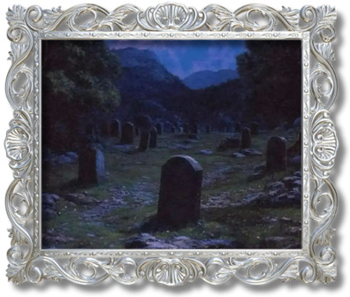

[50] There is a story they tell, about a girl dared by her peers to venture to a local graveyard after dark. This was her folly: when they told her that standing on someone’s grave at night would cause the inhabitant to reach up and pull her under, she scoffed. Scoffing is the first mistake a woman can make.
[51] “I will show you,” she said.
[52] Pride is the second mistake.
[53] They gave her a knife to stick into the frosty earth, as a way of proving her presence and her theory.
[54] She went to that graveyard. Some storytellers say that she picked the grave at random. I believe she selected a very old one, her choice tinged by self-doubt and the latent belief that if she were wrong, the intact muscle and flesh of a newly dead corpse would be more dangerous than one centuries gone.
[55] She knelt on the grave and plunged the blade deep. As she stood to run she found she couldn’t escape. Something was clutching at her clothes. She cried out and fell down.
[56] When morning came, her friends arrived at the cemetery. They found her dead on the grave, the blade pinning the sturdy wool of her skirt to the ground. Dead of fright or exposure, would it matter when the parents arrived? She was not wrong, but it didn’t matter any more. Afterwards, everyone believed that she had wished to die, even though she had died proving that she could live.
[57] As it turns out, being right was the third, and worst, mistake.
This story highlights the unspoken rules society has placed on women. According to the protagonist, a girl can make three mistakes: scoffing, pride, and being right. Under patriarchal governance, a woman cannot challenge the dominating ideals, cannot try and seek the truth, and most importantly, cannot know the truth. For these rules, women are socialized to fear a world that is inherently hostile to them. The "ghost" isn't real, but the fear is. It symbolizes how women often become trapped by the very societal structures—symbolized by the skirt that was struck with a knife—that define their gender, leading to a self-fulfilling prophecy of victimhood. As the protagonist says, the girl in the legend was right; there was no ghost, but it did not matter, as it was her fear that killed her.